From the problem to a solution
Once you understand your customer segment and its specific problem, you start thinking about the solution you will offer. That solution has to meet the main pain points or customer needs you identified in the problem interviews.

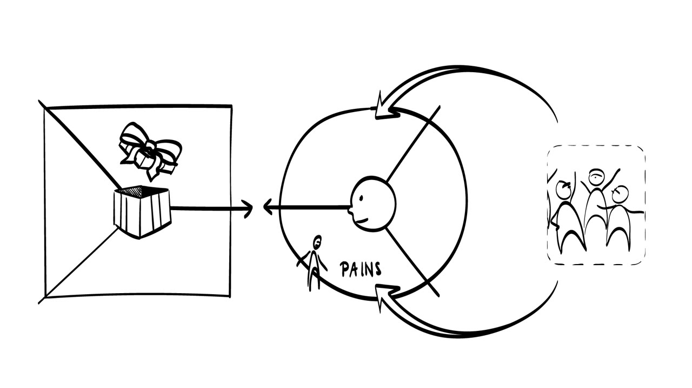
Lean Startup says you should not develop the entire product or service first and then try to market it. You need to get a feeling, at a very early stage, for whether your customers would adopt your product. The lecture uses two e-commerce companies to show what happens when you skip this step and when you take it.
Webvan: get big fast
Webvan was an online grocery business that planned to expand to the whole of the United States. After its IPO in 1999 it was valued at US$4.8 billion. In 2001 it filed for bankruptcy, having lost more than US$800 million, and fired 2,000 employees.

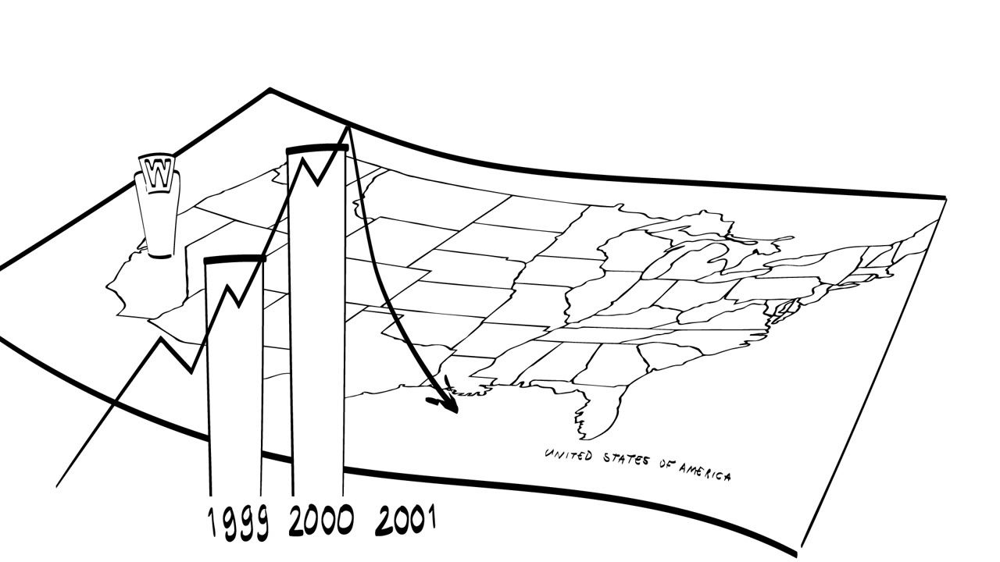
Webvan was stuck on the mantra "get big fast". It invested heavily in infrastructure and technology, such as warehouses and logistics technology. Customers did not accept the service, and revenues stayed far below expectations.
Zappos: photos first, warehouses later
The founder of Zappos wanted to create a web shop for shoes. That seems normal today, but in the late 1990s nobody had explored it. He did not build warehouses or invest in inventory. He went to shoe stores, took pictures of the shoes and put them online.

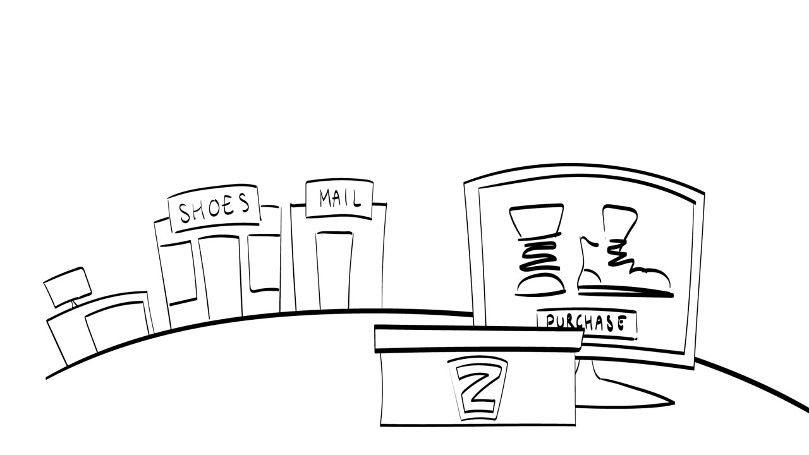
Only after he found support for his hypothesis did Zappos scale. Amazon bought the company in 2009 for US$1.2 billion.
What an MVP is
What the Zappos founder built was a minimum viable product. An MVP is the prototype with the minimum feature set that addresses the right set of problems. Its main goal is to get customer feedback on your proposed solution. Selling at scale is not the goal yet.

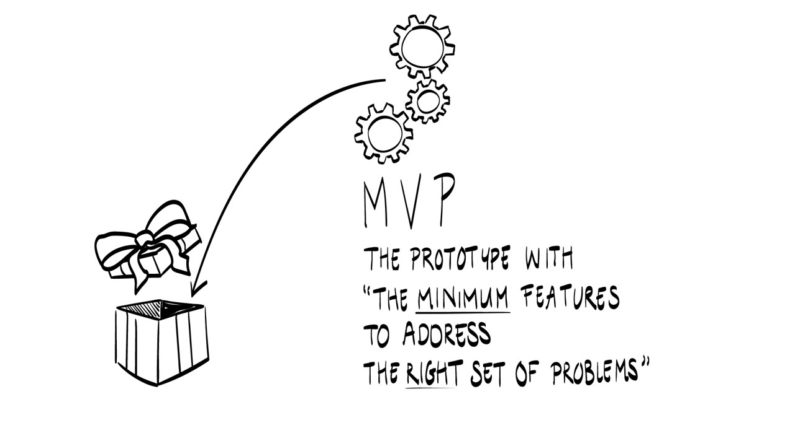
The lecture splits MVPs into two groups, depending on whether the customer's problem is already being solved. With an example MVP the customer only receives information about the solution. With a real-world MVP the customer receives a real solution to the problem.

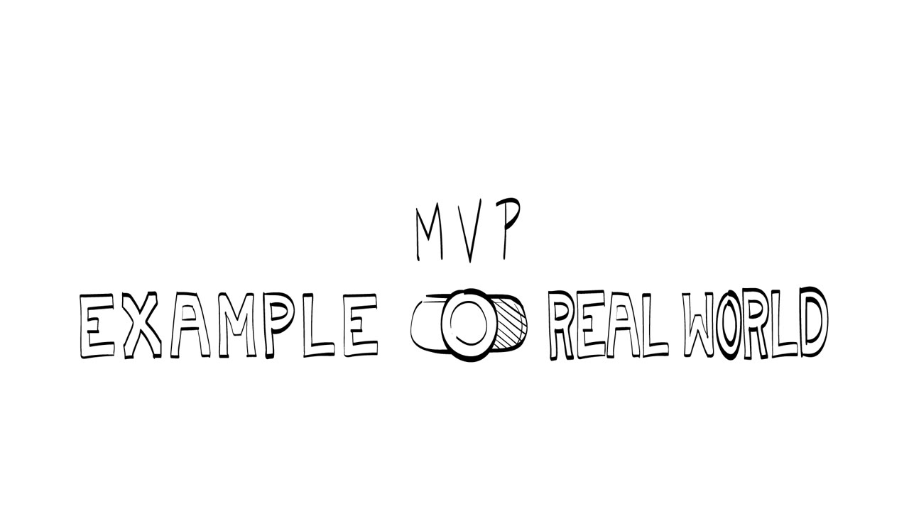
Example MVPs
Landing page
A landing page is a web page that serves as the entry point for a website or for a particular section of one. A good landing page explains the product offer clearly and puts the visual emphasis on the value of the product or service.
You can use it to collect contact information from potentially interested users and to assess conversion rates, that is, how many of the people who looked at the page signed up for more information. You can also A/B test different configurations of your solution.

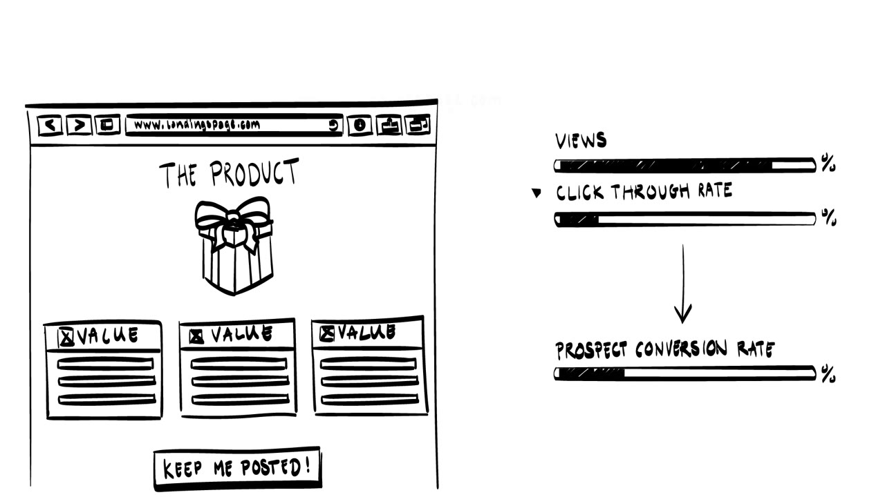

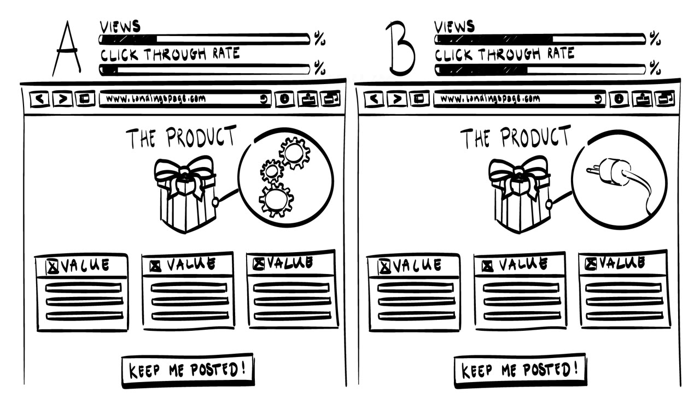
The reasoning behind a landing page as an MVP is that if you cannot get potential customers to sign up for more information, it is very unlikely that they will turn into paying customers. Landing pages are easy to build and host with existing web services.
Video
A video MVP is a video that explains how a product or service may work. The famous example is the Dropbox video. The founding team mimicked rapid file sharing across platforms without having the technology in place, and the video raised a lot of interest among potential adopters.

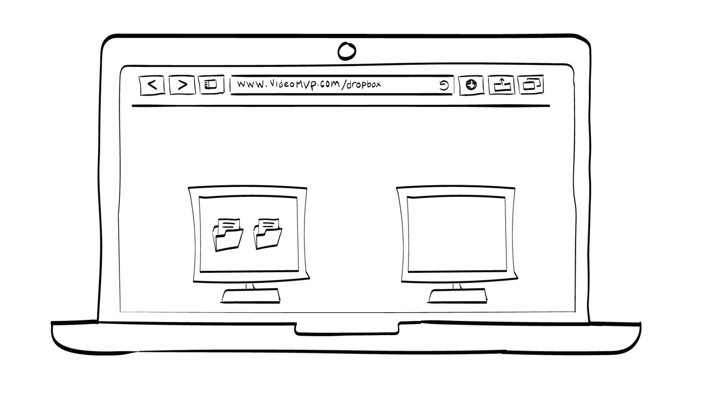
Wireframe
A wireframe is a schematic design of a web page or app. It represents the basic functionality of the software and gives users an idea of the look and feel. You can construct wireframes with web services, or do paper prototyping.

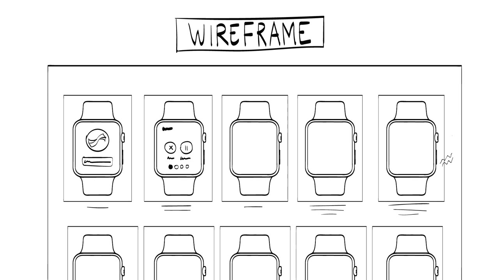

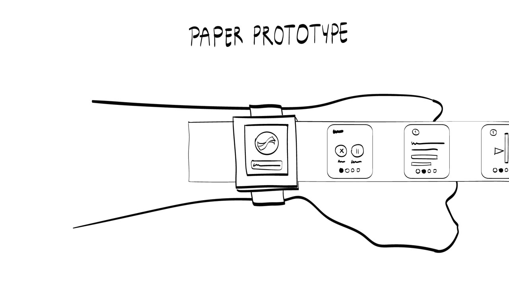
Real-world MVPs
In the second group the customer gets more than information. The problem is really solved. There are two kinds, and they differ in what the customer knows.
Wizard of Oz
In a Wizard of Oz MVP the customer is not aware that the solution is delivered by human effort and not yet by technology. Zappos is a good example.

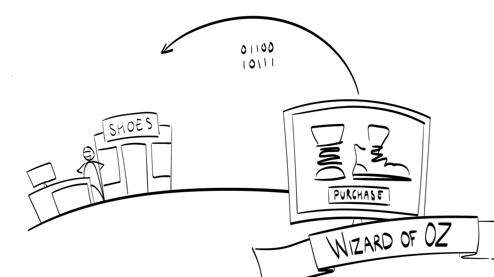
Concierge
In a Concierge MVP the user knows that humans deliver the solution. The example is the start of Airbnb. The founders set up a simple website to let people stay at their apartment during a conference. Three people used it, which gave first support for the hypothesis that people would like to stay at other people's places.

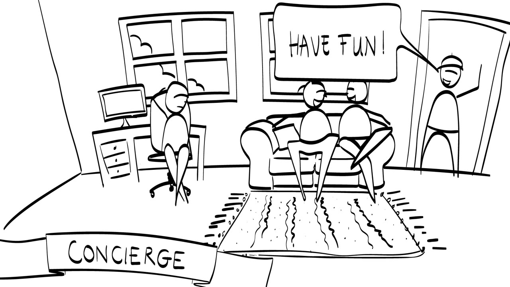
Here the entrepreneur follows the customers closely through the whole experience. That gives two benefits. You build a close connection with your customers, who give you rich information on how they use and react to your product. You can also adapt the user experience very quickly, which shortens test cycles.
The MVP as a research instrument
Use your MVP to learn whether the solution you propose is relevant to the customer. Some MVPs give you quantitative data too, but an MVP is first of all a tool for qualitative market research, such as observations and interviews.

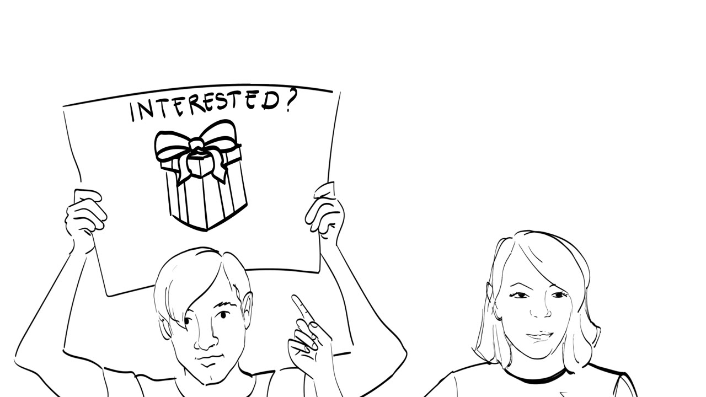
You can bring the MVP into an interview to elicit the customer's response. The lecture gives three ways to ask:
- "What if we had a solution that did X? What would make you most excited?"
- "We are looking to sign up test customers when the solution is ready. Would you be part of the club?"
- "We are shipping a solution for €100 when the product is ready. Should we sign you up?"
The interviews also work for confirmatory hypothesis testing. You state a hypothesis in advance, for example "8 out of 10 respondents will be excited about feature X", and check it against the answers.

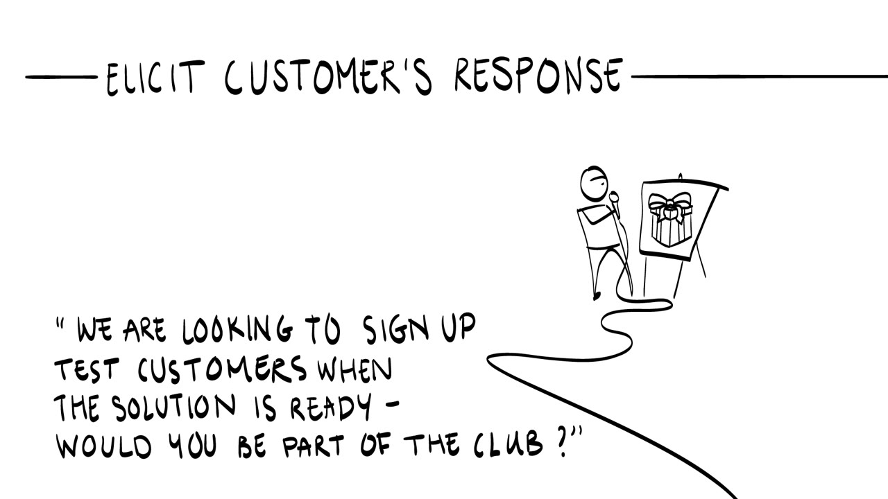

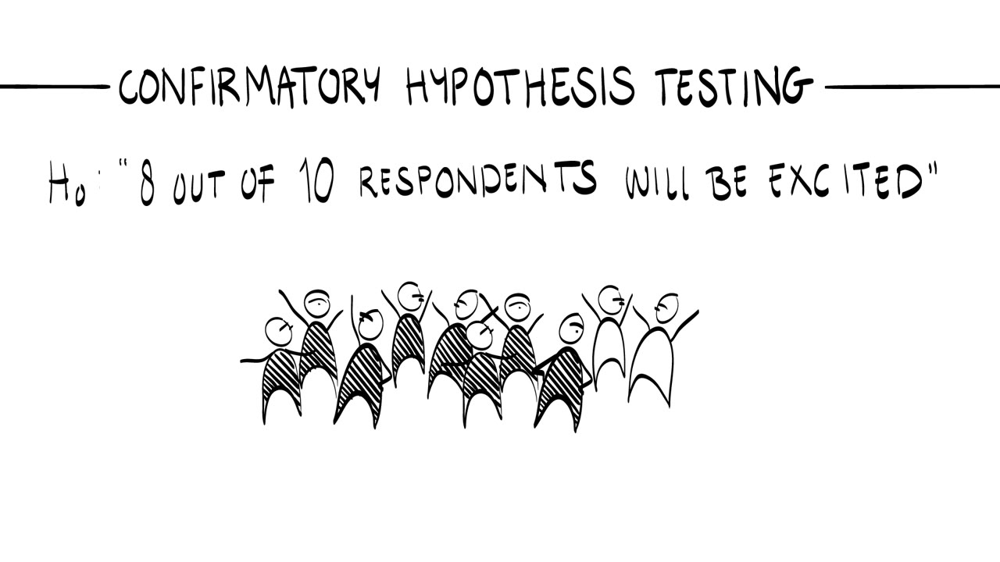
In the end, the solution interviews should tell you whether to continue developing your business, and if so, with which type of solution.
Terms to know
- Minimum viable product (MVP)
- The prototype with the minimum feature set that addresses the right set of problems. Its goal is customer feedback on the proposed solution, not sales at scale.
- Example MVP
- An MVP that gives the customer information about the solution without solving the problem yet. Landing pages, videos and wireframes belong here.
- Real-world MVP
- An MVP that gives the customer a real solution to the problem. Wizard of Oz and Concierge MVPs belong here.
- Landing page
- A web page that serves as the entry point for a website or a section of it. As an MVP it explains the offer, collects contact details and lets you measure conversion.
- Conversion rate
- The share of people who looked at the page and then signed up for more information.
- Video MVP
- A video that explains how a product or service may work, such as the Dropbox video.
- Wireframe
- A schematic design of a web page or app that shows the basic functionality and gives an idea of the look and feel.
- Wizard of Oz MVP
- A real-world MVP where the customer does not know that people, not technology, deliver the solution. Example: Zappos.
- Concierge MVP
- A real-world MVP where the customer knows that people deliver the solution, and the entrepreneur follows the customer through the experience. Example: the first Airbnb stay.
- Confirmatory hypothesis testing
- Stating a hypothesis before the interviews, such as "8 out of 10 respondents will be excited about feature X", and checking it against the responses.